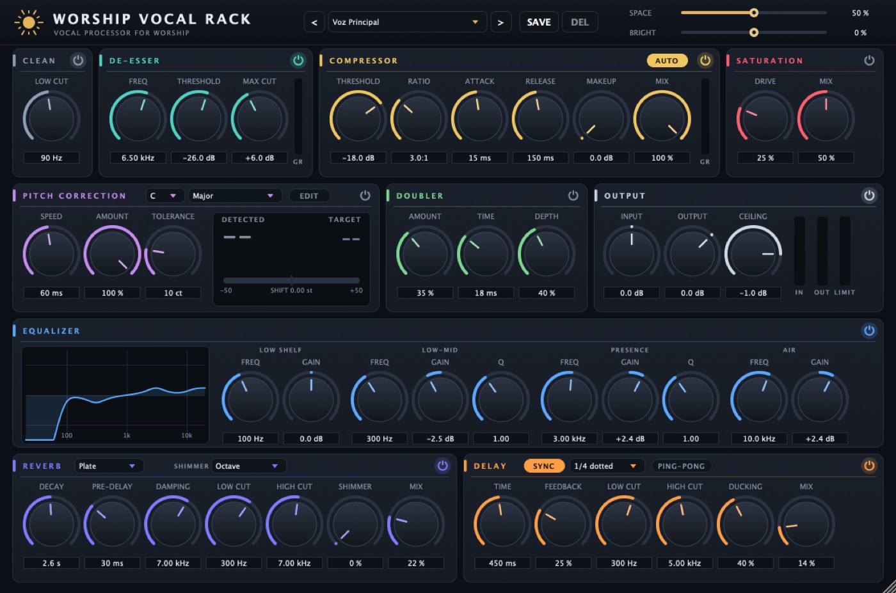

Disponible
Worship Vocal Rack
La cadena completa para voces de alabanza en un solo plugin, con editor de afinación manual.
- EQ, de-esser, compresor y saturación
- Afinación automática y editor nota por nota
- Reverb con shimmer y delay sincronizado
USD — precio a definirComprar